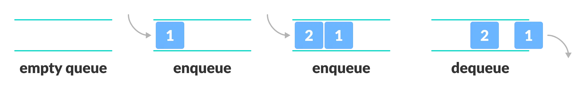
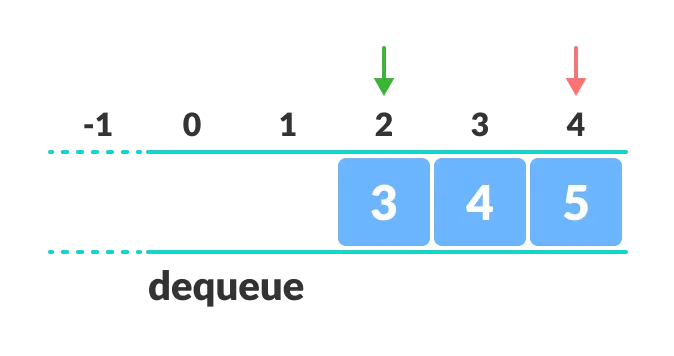

Queue Data Structure
- A queue is a useful data structure in programming. It is similar to the ticket queue outside a cinema hall, where the first person entering the queue is the first person who gets the ticket.
- Queue follows the First In First Out (FIFO) rule - the item that goes in first is the item that comes out first.
- In the above image, since 1 was kept in the queue before 2, it is the first to be removed from the queue as well. It follows the FIFO rule.
- In programming terms, putting items in the queue is called enqueue, and removing items from the queue is called dequeue.

FIFO Representation of Queue
Basic Operations of Queue
A queue is an object (an abstract data structure - ADT) that allows the following operations:
- Enqueue: Add an element to the end of the queue.
- Dequeue: Remove an element from the front of the queue.
- IsEmpty: Check if the queue is empty.
- IsFull: Check if the queue is full.
- Peek: Get the value of the front of the queue without removing it.
- two pointers "FRONT" and "REAR".
- "FRONT" track the last element of the queue.
- "REAR" track the first element of the queue.
- initially, set value of FRONT and REAR to -1
- check if the queue is full.
- for the first element, set the value of "FRONT" to 0.
- increase the "REAR" index by 1.
- add the new element in the position pointed to by "REAR"
- check if the queue is empty.
- return the value pointed by "FRONT".
- increase the FRONT index by 1.
- for the last element, reset the values of "FRONT" and "REAR" to -1
- START
- Check if the queue is full.
- If the queue is full, produce overflow error and exit.
- If the queue is not full, increment rear pointer to point the next empty space.
- Add data element to the queue location, where the rear is pointing.
- return success.
- END
As you can see in the image below, after a bit of enqueuing and dequeuing, the size of the queue has been reduced.
And we can only add indexes 0 and 1 only when the queue is reset (when all the elements have been dequeued).
After REAR reaches the last index, if we can store extra elements in the empty spaces (0 and 1), we can make use of the empty spaces. This is implemented by a modified queue called the circular queue.
- The complexity of enqueue and dequeue operations in a queue using an array is O(1). If you use pop(N) in python code, then the complexity might be O(n) depending on the position of the item to be popped.
- CPU scheduling, Disk Scheduling
- When data is transferred asynchronously between two processes.The queue is used for synchronization. For example: IO Buffers, pipes, file IO, etc
- Handling of interrupts in real-time systems.
- Call Center phone systems use Queues to hold people calling them in order.
Working of Queue
Queue operations work as follows:
Enqueue Operation
Dequeue Operation

Enqueue and Dequeue Operations
Queue Algorithm
Queue Implementations in Python, Java and C/C++
# Queue implementation in Python
class Queue:
def __init__(self):
self.queue = []
def enqueue(self, item):
self.queue.append(item)
def dequeue(self):
if len(self.queue) > 0:
return self.queue.pop(0)
else:
return "Queue is empty"
def peek(self):
if len(self.queue) > 0:
return self.queue[0]
else:
return "Queue is empty"
def is_empty(self):
return len(self.queue) == 0
q = Queue()
q.enqueue(10)
q.enqueue(20)
q.enqueue(30)
print(q.dequeue()) # 10
print(q.peek()) # 20
// Queue implementation in Java
class Queue {
int front = -1;
int rear = -1;
int maxSize = 5;
int[] queue = new int[maxSize];
void enqueue(int item) {
if (rear == maxSize - 1) {
System.out.println("Queue is full");
} else {
if (front == -1) front = 0;
queue[++rear] = item;
}
}
int dequeue() {
if (front == -1 || front > rear) {
System.out.println("Queue is empty");
return -1;
}
else {
return queue[front++];
}
}
int peek() {
if (front == -1 || front > rear) {
System.out.println("Queue is empty");
return -1;
}
else {
return queue[front];
}
}
boolean isEmpty() {
return (front == -1 || front > rear);
}
public static void main(String[] args) {
Queue q = new Queue();
q.enqueue(10);
q.enqueue(20);
q.enqueue(30);
System.out.println(q.dequeue()); // 10
System.out.println(q.peek()); // 20
}
}
// Queue implementation in C
#include <stdio.h>
#define MAX 5
int queue[MAX];
int front = -1, rear = -1;
void enqueue(int item) {
if (rear == MAX - 1) {
printf("Queue is full");
} else {
if (front == -1) front = 0;
queue[++rear] = item;
}
}
int dequeue() {
if (front == -1 || front > rear) {
printf("Queue is empty");
return -1;
}
else {
return queue[front++];
}
}
int peek() {
if (front == -1 || front > rear) {
printf("Queue is empty");
return -1;
}
else {
return queue[front];
}
}
int isEmpty() {
return (front == -1 || front > rear);
}
int main() {
enqueue(10);
enqueue(20);
enqueue(30);
printf("Dequeued: %d\n", dequeue());
printf("Front element: %d\n", peek());
return 0;
}
// Queue implementation in C++
#include <iostream>
using namespace std;
class Queue {
int front, rear;
int maxSize;
int* queue;
public:
Queue(int size) {
maxSize = size;
queue = new int[size];
front = -1;
rear = -1;
}
void enqueue(int item) {
if (rear == maxSize - 1) {
cout << "Queue is full" << endl;
} else {
if (front == -1) front = 0;
queue[++rear] = item;
}
}
int dequeue() {
if (front == -1 || front > rear) {
cout << "Queue is empty" << endl;
return -1;
}
else {
return queue[front++];
}
}
int peek() {
if (front == -1 || front > rear) {
cout << "Queue is empty" << endl;
return -1;
}
else {
return queue[front];
}
}
bool isEmpty() {
return (front == -1 || front > rear);
}
~Queue() {
delete[] queue;
}
};
int main() {
Queue q(5);
q.enqueue(10);
q.enqueue(20);
q.enqueue(30);
cout << "Dequeued: " << q.dequeue() << endl;
cout << "Front element: " << q.peek() << endl;
return 0;
}
Limitations of Queue

Limitation of a queue